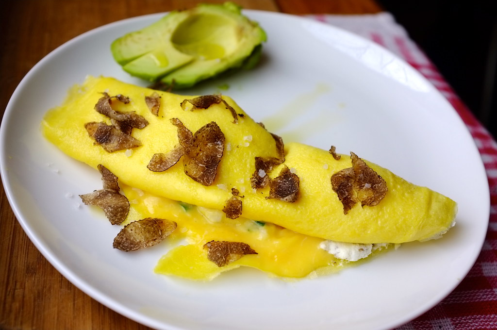
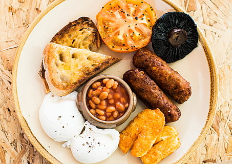

How do you like your eggs in the morning?
-

- 
-

- 
-

-

-

Grilled free range duck egg and Gruyere cheese sandwich, made with freshly baked white bread. This fried egg and cheese sandwich is heaven in every bite
£4.00
Simple is the best. This is especially true when it comes to Chinese crepes. It doesn’t use milk in the batter. It doesn’t mess with cream or fancy fruit. It isn’t drizzled with decadent chocolate sauce or syrup. It is savory, has a very plain look and a hearty taste.
£4.00
Making eggs Benedict requires careful orchestration. You have to have warm, crispy bacon, hot buttered toasted English muffins, eggs poached perfectly to your desire, and a warm, creamy, unbroken hollandaise sauce, all created fresh to order.
£6.50
"A full Monty," supposedly named for British Army general Bernard Montgomery (nicknamed Monty), who was said to have started every day with a full English breakfast during the campaign in North Africa during World War II.
£10.00
Delicious bacon with a free-range egg, a slice of cheese and one of our toasted English muffins. Delicious every time.
£4.00
This simple smashed avocado on toast with poached eggs and tomatoes is super tasty. The 'Energiser' is perfect for a lazy breakfast or brunch when you need a little boost.
£6.50
Spanish omelette or Spanish tortilla is a traditional dish from Spain. Celebrated as national dish by Spaniards, it is an essential part of the Spanish cuisine.
£6.00